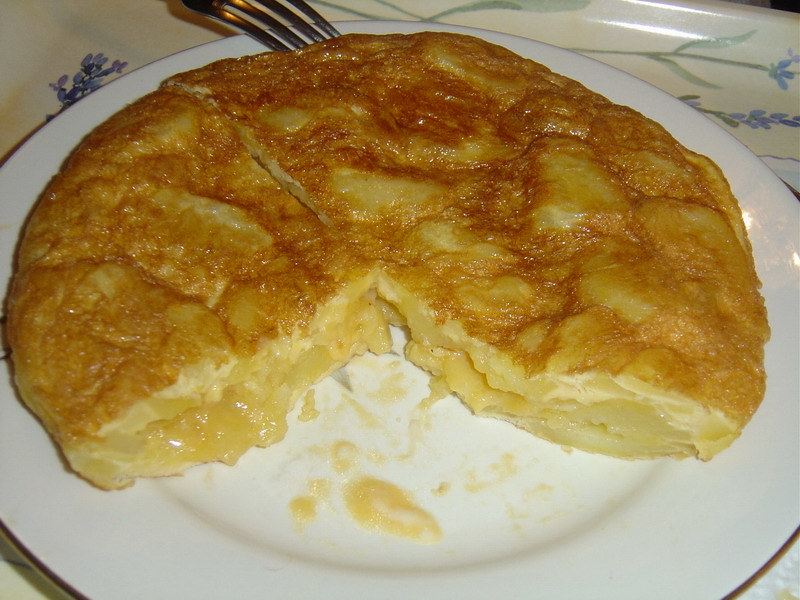

Tortilla de patatas

Description
Tortilla de patatas is a Spanish omelette made from thinly sliced potatoes and onions, cooked in olive oil, and bound with a simple egg mixture. Serve warm or at room temperature for a delicious tapa or appetizer.
Ingredients
- 2 cups extra-virgin olive oil
- 2 pounds Yukon Gold potatoes, peeled and thinly sliced
- 1 medium onion, thinly sliced
- 2 teaspoons pink Himalayan salt, divided
- 6 large eggs
- 1 teaspoon olive oil, or more to taste
Steps
- Heat oil in a deep stockpot over medium-high heat until almost smoking, 2 to 4 minutes. Add potatoes and onion; they should be mostly covered with oil. Season with 1 ½ teaspoons salt. Cook, stirring occasionally and maintaining a gentle simmer, until potatoes are just fork-tender, 8 to 12 minutes; do not overcook.
- Drain potato-onion mixture in a colander; reserve oil for another use or discard. Allow to cool for a few minutes, then taste and season with more salt, if needed
- Meanwhile, crack eggs into a large bowl and season with remaining 1/2 teaspoon salt; whisk until well beaten. Add potato-onion mixture and toss to coat.
- Heat a 10-inch nonstick skillet over high heat. Add 1 teaspoon olive oil, then pour in egg-potato mixture. Level it with a spatula and cook for 1 minute. Reduce heat to medium-low and cook for about 5 minutes. Run a rubber spatula around the outer edges to make sure it's not sticking and to help it form its shape.
- Once it starts to firm up around the edges and in the center (although it will still be a little runny), place a large plate over the skillet. Flip the omelet onto the plate, then slide it back into the skillet. Use the spatula to help press the edges in and under, to maintain a rounded edge. Cook over high heat for 1 minute, then reduce to low and cook until it feels set in the center and a knife inserted in the center comes out clean, 2 to 3 more minutes.
Home